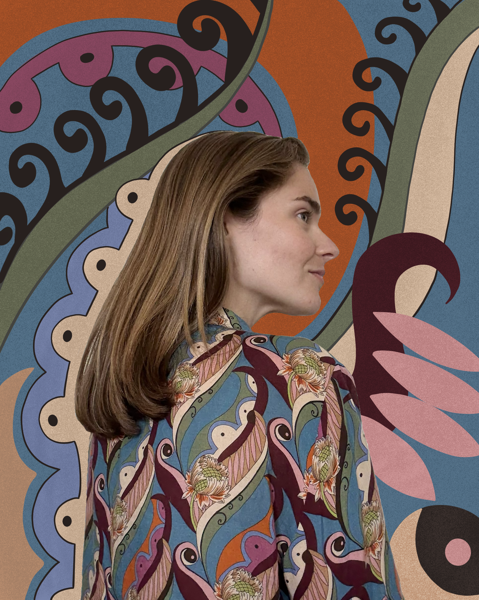

Kat Schwartz is a Michigan-born, San Francisco-based illustrator and graphic designer with a sharp eye for stylish storytelling. Her work spans brand identity, packaging, motion design, and web design.
Kat partners with individuals, small businesses, organizations, events, and emerging brands to create cohesive and compelling visuals across print and digital. Her services include illustration, custom typography, logo development, UI/UX mockups, packaging design, animated assets, and art direction.
Her design work is informed by her background in international relations and writing—making her a versatile collaborator from concept to launch. Punchy, subtle, minimalist, or maximalist, she just wants to make something great.
View pricing guide here.
© 2025 Kat Schwartz. All rights reserved.